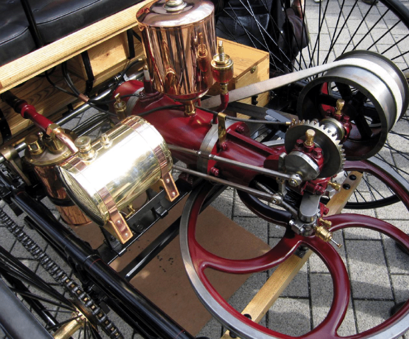
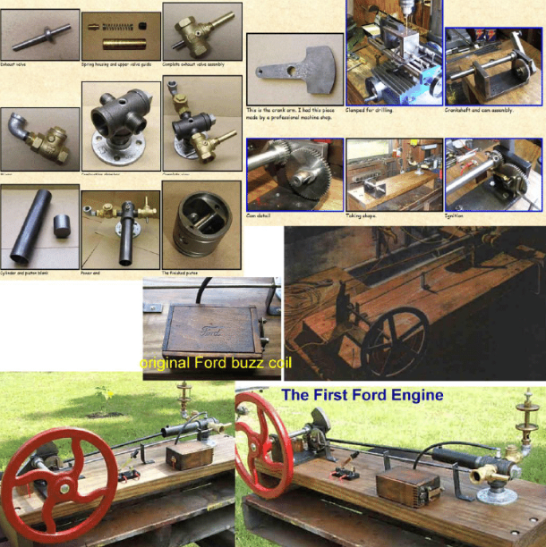

Istoria Motoarelor cu ardere interna
Ce este un motor cu ardere interna?
Motorul cu ardere internă este motorul care transformă energia chimică a
combustibilului prin intermediul energiei termice de ardere, în interiorul
motorului, în energie mecanică. Căldura degajată în camera de ardere se
transformă prin intermediul presiunii (energiei potențiale) aplicate
pistonului în mișcare mecanică ciclică, de obicei rectilinie, după care în
mișcare de rotație uniformă, obținută de obicei la arborele cotit. Camera
de ardere este un reactor chimic unde are loc reacția chimică de ardere.

Căldura introdusă în ciclul care se efectuează în cilindrii motorului se
obține prin arderea combustibilului, de obicei un combustibil lichid ca:
benzina, motorina sau gazul petrolier lichefiat, dar se pot folosi și
combustibili gazoși, ca gazul natural, sau chiar solizi, ca praful de
cărbune. Oxigenul necesar arderii se obține din aerul atmosferic.
Combustibilul în amestec cu aerul se numește amestec carburant. Arderea
poate fi inițiată prin punerea în contact direct a amestecului carburant
cu o sursă de căldură sau se poate produce aproape instantaneu în toată
masa amestecului caz în care se numește detonație și are un caracter
exploziv.
I. Introducere
Primele două mari revoluţii tehnice, ştiinţifice, industriale, economice, sociale, politice, care au schimbat
radical aspectul (istoria) omenirii au avut la bază mecanismele cu camă şi tachet. Prima revoluţie
s-a datorat apariţiei şi dezvoltării rapide a războaielor de ţesut (maşinilor automate cu came).

A doua mare revoluţie s-a datorat tot mecanismelor cu came, de data aceasta fiind
vorba de cele din componenţa motoarelor cu ardere internă cu supape, de tip Otto,
Diesel ori Lenoir. Această etapă din dezvoltarea planetei noastre a avut rolul cel mai
însemnat, în sensul că ne-a marcat profund modul de viaţă. Hai să ne imaginăm cum
ar fi fost viaţa noastră astăzi fără mijloacele de transport moderne şi rapide, fără
posibilitatea deplasărilor la mari distanţe, izolaţi, dar şi fără mijloacele necesare vieţii
care nu ar mai fi putut fi nici ele transportate (evident nici construcţiile nu s-ar mai fi
dezvoltat, nici marile uzine, magazine, stadioane, etc). Energia şi transportul (cele
mai vitale pentru omenire) sunt astăzi mai mult ca oricând considerate strategice
(chiar dacă ele au produs şi o parte din poluarea planetei), fapt pentru care se caută
în permanenţă noi modalităţi de îmbunătăţire a mijloacelor de transport şi de
producere a energiei; există chiar şi o simbioză între aceste două mari laturi sociale
ale omenirii (ajunsă azi aproape la maturitatea ei deplină).


II. Prima Revolutie Industriala
Revoluția industrială a început la sfârșitul secolului al XVIII-lea și în primele decenii ale secolului
al XIX-lea mai întâi în Anglia, care a reușit să se mențină ca prima putere industrială a lumii până la sfârșitul secolului al
XIX-lea. În Franța, revoluția industrială a evoluat lent, începuturile ei datând din
jurul anilor 1830. Industrializarea Germaniei a fost marcată de fărâmițarea sa
politică, condițiile favorabile declanșării revoluției în acest domeniu fiind create prin anii 1840-1850.
Dezvoltarea industrială a SUA a debutat la mijlocul secolului al XIX-lea prin aplicarea unei multitudini de invenții și
inovații.Sosirea masivă de emigranți după 1865 a antrenat o puternică dezvoltare a economiei americane și astfel
în jurul anului 1900 SUA a devenit prima țară industrială din lume.
Descoperirile din domeniul științific au impulsionat apariția unor tehnici și invenții moderne:
| 1698 Denis Papin a inventat cazanul cu aburi sub presiune. |
1712 Thomas Newcomen a construit un motor cu aburi prevăzut cu piston și cilindru, însă abia în anul 1776 când James Watt a produs motorul cu aburi perfecționat se consideră că a început revoluția industrială. |
Aceasta s-a manifestat cu precădere în domeniul textil, la început. Astfel John Kay inventează suveica zburătoare care permitea realizarea de țesături mult mai late decât până la acel moment. Apoi la 1765 James Hargreaves inventează mașina de tors și la 1789 Edmund Cartwright războiul de țesut. În acest moment Anglia primește numele de "atelierul lumii". |
Importante descoperiri se fac și în alte domenii, precum în metalurgie : Abraham Darby inventează fonta pe bază de cocs, Wilkinson laminarea oțelului. |
Aceste progrese au impulsionat fenomenul de „revoluție industrială”.
Revoluția industrială a fost un proces tehnic complex prin care munca manuală a fost înlocuită cu mașinismul. În acest proces mecanizat muncitorului îi
revine rolul de supraveghere, reglare și alimentare a mașinii și control al calității. Revoluția industrială a avut ca efect creșterea producției, dezvoltarea orașelor și a științei.
Primul domeniu în care a fost utilizată mașina cu abur a fost industria textilă.
Impactul social al revoluției industriale a marcat dezvoltarea diviziunii sociale a muncii, au apărut noi ramuri de producție, noi centre industriale,
s-au impus relațiile economice capitaliste în fața celor feudale. De asemenea, apare clasa mijlocie, categorie ce beneficia de câștiguri financiare rezonabile
și care avea un comportament atent față de elitele burgheze sau aristocratice. Se observă o mare schimbare în vestimentație și în investițiile pentru locuințele
aspectuoase și confortabile. Dintre toate clasele sociale se afirmă burghezia, cea care este o clasă de bază a societății capitaliste.
Impactul tehnic a provocat o puternică impulsionare în domeniul invențiilor, apar fabrici, uzine, iar munca manuala se înlocuiește cu cea mecanizată. O importantă
invenție a fost făcută în anul 1760, când James Watt a inventat Motorul cu abur, care a început să fie utilizat în diferite ramuri ale industriei. În anul 1829 inventatorul
și inginerul englez George Stephenson inaugurează locomotiva „Racheta”, care este considerată prima locomotivă rentabilă.
III. A 2-A Revolutie Industriala
A doua revolutie industrial avut loc la sfârșitul secolului 19 și a culminat cuapariția unei noi surse de energie : electricitatea.Principala caracteristică a acestei perioade
a fost schimbarea puterii industrialeîn lume. Până la mijlocul secolului al XIX-lea, Regatul Unit era liderul mondialîn domeniul construcției de mașini, datorită contribuțiilor
sale în timpul primeirevoluții industriale. Pentru a doua etapă a acestei schimbări globale, Germaniași Statele Unite au devenit principalii producători industriali ai planetei.
IV. A 3-A Revolutie Industriala
Începe în cea de-a doua jumătate a secolului 20 și se întrepătrunde într-ooarecare măsură cu cea de-a patra, care se desfășoară chiar în zilele noastre.Această revoluție își va
avea originea în Statele Unite, Japonia și Europa. Bazasa principală ar fi apariția noilor tehnologii, în special a tehnologiilorinformaționale. În acest sens, Internetul și toate
invențiile dezvoltate de peInternet au fost elementul care a provocat cele mai multe transformări pentru planetă.Principala consecință a celei de-a treia revoluții industriale a fost
globalizarea. Noile forme de comunicare, transportul îmbunătățit și existența informațiilor
globale au făcut ca economia, cultura și politica din toate părțile planetei să fiecomplet corelate.Dezvoltarea noilor tehnologii a dat naștere unor noi domenii de cercetare, înspecial
cea spațială și în domeniul biotehnologiei. A luat naștere o nouă eră aautomatizării proceselor de producție și apariția roboților industriali
V. A 4-A Revolutie Industriala
A patra revolutie industriala , spre deosebire de celelalte , evolueaza cu o vitezaintr-un ritm exponential, noile tehnologii generează tehnologii mai noi și din ceîn ce mai capabile.
Aceasta se bazeaza pe revolutia digitala unde combina maimulte tehnologii si implica transformarea sistemelor intregi, in interiorul tarilor,companiilor, industiilor si societatii.Vehiculele,
in ziua de astazi nu mai sunt o surpriza pentru nimeni :mașinafară șofer un exemplu bun care domina in ziua de astazi, dar există multe altevehicule autonome,inclusiv camioane, drone, avioane și bărci.
Pe măsură ce progresează tehnologiile precum senzorii și inteligența artificială, capacitățiletuturor acestor mașini autonome se îmbunătăesc într-un ritm rapid.
Modelul ubar din ziua de astazi reflecta puterea perturbatoare a tehnologiei,
aceste platforme se inmultutesc rapid pentru a oferii noi servicii, de la
cumparaturi pana la partajarea plimbarilor pe distante lungi.
Relaţiile industriale se vor schimba pe măsură ce robotizarea va avansa. Chiar
daca tehnologia are un impact pozitiv asupra cresterii economice, aceasta are si
un impact negative de piata muncii, in ultimii ani au fost dovezi care au aratat,
inlocuirea Relaţiile industriale se vor schimba pe măsură ce robotizarea va
avansa.
Aparitia si dezvoltarea, motoarelor cu ardere interna cu supape de tip otto sau diesel, legata de cea a automobilelor
În anul 1680, fizicianul olandez, Christian Huygens, proiectează primul motor cu ardere internă. În 1807, elvețianul Francois Isaac de Rivaz inventează un motor cu ardere internă care utiliza drept
combustibil un amestec lichid de hidrogen și oxigen. Automobilul proiectat de Rivaz pentru noul său motor a fost însă un mare insucces, astfel încât și motorul său a trecut pe linie moartă, neavând o aplicație
imediată. În 1824, inginerul englez Samuel Brown adaptează un motor cu aburi determinându-l să funcționeze cu benzină.
În 1858, inginerul născut în Belgia, Jean Joseph Etienne Lenoir, a inventat și a patentat (1860) un motor cu dublă pornire prin scânteie electrică prin combustie internă alimentat cu gaz lichid extras din cărbune. În 1863,
Lenoir a atașat și a îmbunătățit motorul (folosind petrolul și un carburator rudimentar) pentru o căruță pe trei roți care a reușit o călătorie istorică de 50 de mile pe șosea. Acesta este practic primul motor real cu ardere
internă cu aprindere electrică prin scânteie, acesta fiind un motor ce funcționa în doi timpi. În 1863, tot belgianul Lenoir este cel care adaptează la motorul său un carburator făcându-l să funcționeze cu gaz petrolier (sau benzină).
În anul 1862, inginerul francez Alphonse Beau de Rochas brevetează pentru prima oară motorul cu ardere internă în patru timpi (fără însă a-l construi). În 1864, inginerul austriac Siegfried Marcus a construit un motor cu un cilindru
carburator (improvizat) rudimentar și a adaptat motorul său pentru o cursă îngreunată de 500 de picioare. Este meritul inginerilor germani Eugen Langen și Nikolaus August Otto de a construi (realiza fizic, practic, modelul teoretic al
francezului Rochas) primul motor cu ardere internă în patru timpi, în anul 1866, având aprinderea electrică, carburația și distribuția într-o formă avansată. Zece ani mai târziu, (în 1876), Nikolaus August Otto își brevetează motorul său.
În același an (1876), Sir Dougald Clerk pune la punct motorul în doi timpi al belgianului Lenoir (aducându-l la forma cunoscută și azi). În 1885, Gottlieb Daimler aranjează un motor cu ardere internă în patru timpi cu un singur cilindru așezat
vertical și cu un carburator îmbunătățit montat prima dată pe o motocicletă. Un an mai târziu, și compatriotul său Karl Benz aduce unele îmbunătățiri motorului în patru timpi pe benzină.

Atât Daimler cât și Benz lucrau noi motoare pentru noile lor autovehicole (atât de renumite). În 1889, Daimler îmbunătățește motorul cu ardere internă în patru timpi, construind un "doi cilindri în V", și aducând distribuția
la forma clasică de azi, "cu supapele în formă de ciupercuțe". În 1890, Wilhelm Maybach construiește primul "patru-cilindri", cu ardere internă în patru timpi. În 1892 apare primul automobil Peugeot cu o motorizare proprie de tip Otto.
Tot anul 1892 este un an special deoarece, inginerul german Rudolf Christian Karl Diesel, inventează motorul cu aprindere prin comprimare, pe scurt motorul diesel. După Lenoir și Otto apare invenția lui Diesel ca fiind de o importanță deosebită.
Motorul diesel este un motor cu combustie internă, cu aprindere prin compresie, în care combustibilul se detonează doar prin temperatura ridicată creată de comprimarea amestecului aer-carburant și nu prin utilizarea unui dispozitiv auxiliar, așa cum ar
fi bujia în cazul motorului pe benzină. Motorul operează utilizând ciclul diesel. Inginerul german Rudolf Diesel, care l-a inventat în 1892 și l-a patentat pe 23 februarie 1893 intenționa ca motorul său să utilizeze o varietate largă de combustibili inclusiv
praful de cărbune, parcă prevăzând peste veacuri necesitatea diversificării combustibililor și renunțarea treptată la combustibilii fosili petrolieri (aflați pe cale de dispariție).

Diesel și-a prezentat invenția funcționând în 1900 la Expoziția Universală (World's Fair) utilizând ulei de alune (motorul diesel fiind atunci spre deosebire de utilizarea lui ulterioară destinat funcționării cu biocombustibili).
În iunie 1896 Ford construiește prima sa mașină, quadricicletă, la doi ani după Benz (vorbind de producția de serie). În 1903 uzina Ford se transformă în Ford Motor Company, luând astfel o amploare fără precedent și cunoscând un succes
remarcabil atât în state cât și pe bătrânul continent prin producția sa bogată și variată. Henry Ford (1863-1947) a inventat o linie de asamblare automobile proprie, automatizată, mult îmbunătățită, și a instalat prima bandă transportoare pe linia
sa automată de asamblare, în fabrica personală de autovehicule din Ford's Highland Park, uzina din Michigan, SUA, în 1913. Linia de asamblare a redus costurile de producție pentru autoturisme, prin reducerea timpului de asamblare. Ford trece astfel
de pe locul trei în lume (după Daimler și Benz), pe primul loc, devenind astfel numărul unu în producția mondială de autovehicule. În 1927 Ford fabricase deja 15 milioane de automobile numai din faimosul model T, care imediat după prima automatizare
s-a montat în numai 93 minute. Primul motor Ford a fost construit chiar de Henry în casa sa (artizanal), însă a funcționat foarte bine.
Concluzie
Dezvoltarea motoarelor cu ardere internă s-a făcut în permanență la cererea și cu sprijinul industriei automobilelor. Trebuie menționat că imediat după apariția sa, industria automobilelor a luat un start extraordinar și s-a impus ca prima industrie din lume,
atât cantitativ cât și calitativ, din care au derivat apoi multe alte ramuri ale industriei constructorului de mașini. Orice mare constructor de automobile a devenit ulterior și un constructor de locomotive și trenuri, un constructor de avioane, elicoptere și
aeronave, un constructor de șalupe, vapoare, etc. Roboții industriali, atât de răspândiți și diversificați astăzi, au luat ființă și s-au dezvoltat ca un sprijin permanent al industriei constructorului de autovehicule. Industria petrolieră și petrochimia s-au dezvoltat
și au luat amploare tocmai datorită industriei auto. La fel și cea electronică și electrotehnică, în fazele lor primordiale. Industria auto a creat și dezvoltat în permanență multiple locuri de muncă, a ajutat la diversificarea altor ramuri din industria constructorului
de mașini și din alte sectoare și domenii. Toată industria siderurgică și cea metalurgică s-au dezvoltat inițial datorită ei. Astăzi, nu mai putem concepe viața fără transport. Transporturile s-au dezvoltat și diversificat în toate direcțiile, devenind o componentă fundamentală a vieții noastre cotidiene.
Ce rol mai poate juca astăzi bătrânul motor Otto sau Diesel? Motoarele cu ardere internă sunt încă adânc ancorate în toate mediile de transport de azi, trăind într-o simbioză reală cu automobilele și cu alte mijloace de transport, însă în concurență permanentă cu alte tipuri de motoare. Principalul concurent al motoarelor cu ardere internă a fost și rămâne motorul electric.